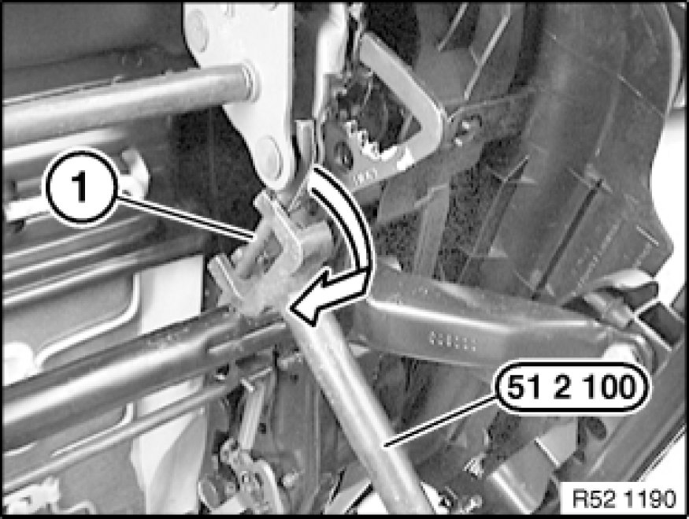

Removing and Installing/Replacing Seat Angle Adjuster (Normal/Manual) on Left or Right Front Seat
52 13 070 - Removing and installing/replacing seat angle adjuster (normal/manual) on left or right front seat

Special tools required:
- 51 2 100 51 2 100 Clamping Lever

Necessary preliminary tasks:
- Remove front seat Front Seat, Normal, Manual
- Remove actuating unit Removing and Installing/Replacing Controls on Left/Right Front Seat (Normal/Manual)

Warning!
Torsion bar spring (1) is subject to tension. Risk of injury.
Lever torsion bar spring (1) with special tool 51 2 100 51 2 100 Clamping Leverin direction of arrow from seat angle adjuster.
Feed torsion bar spring (1) out of seat mechanism.
Installation:
Make sure plastic protector is correctly positioned on contact surface between torsion bar spring and seat mechanism (grating noises).

Release screws (1).
Installation:
Replace Taptite screws (1).
Tightening torque 52 10 16AZ [1][2]Seats.
Release screw (2).
Tightening torque 52 10 17AZ [1][2]Seats.
Remove seat angle adjuster (3).
Installation:
Slide left and right O-rings onto shaft. Make sure O-rings are correctly located between seat angle adjuster and seat pan.